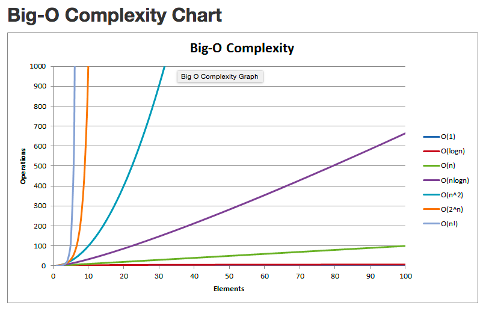

Big O Notation
And What it Means for Different Algorithms
March 21, 2015
As web developers we will be constantly working with very large data sets. In order to really work with and manipulate all the data these sets will provide we will really have to get our hands dirty with algorithms. "ALGORITHMS" you say as you slowly back away. "THEY SAID THERE WASN'T GOING TO BE ANY MATH". Calm down. An algorithm really isn't as scary as it sounds. An algorithm is any set of instructions you perform on an input to get an output. That awesome recipe you have is just an algorithm that takes spinach, artichokes, and cheese and turns it into an amazing spinach-artichoke dip. See, algorithms aren't so scary and can actually be delicious.
Now if all the data you had were just arrays with a few elements, algorithm speeds wouldn't matter. Modern computer hardware and software is fast enough that it can parse and manipulate small data sets almost instantaneously. But once we start getting into large sets like medical records at an insurance company or the United States Census data algorithm speeds start to matter. This leads to the next question, how do you actually measure algorithm speed? You can't just measure it in miliseconds or seconds because that depends a lot on the actual machine and software running the algorithm. Your computer will not be able to run the algorithm at the same speed as a network of super-computers at Google. So scientists use something called Big O notation.
Big O notation doesn't actually care what the length of time an algorithm takes, also known as the runtime of the algorithm, actually is. It only cares how the runtime increases as the size of the input increases towards infinity. Or put simply, how much faster is the runtime for a 10 element array versus a 1,000 element array or a 1,000,000 element array and so on. The simplest example of this is an algorithm whose runtime remains constant no matter what the size of the array is. Say I didn't really care what was in my array and just wanted to see what the element at the first index of the array is. It doesn't matter if the array has 10 or a billion elements, looking up array[0] will still take the same amount of time. This "algorithm"(if you can call it that) is said to said do have a Big O of 1. This is written more simply as O(1).
(Remember, the 1 does not represent the actual time the algorithm takes just that it is a constant amount of time. All constant time algorithms are said to have O(1))
Algorithms whose runtimes increase linearly with the length of the input are said to have O(n). This means that the runtime is proportional to the length of the input. Using an O(n) algorithm on an array with 1,000 elements will take 10 times as long as using it on an array with 100 elements. An algorithm to take the sum of all the elements in an array is an example of this type. No matter how long the array is in order to add all the elements of the array you must iterate through them. Again, the actual time it takes per-element doesn't matter, just that the runtime goes up proportionally to the length of the array.
Other common Big O's are O(n2) for sorting algorithms like bubble sort and quick sort and O(log n) for binary search. There are also many other algorithmic complexities and a graph of all the ones we've discussed here and a few others can be seen below.

Next week I will discuss a few sorting algorithms, how they work, and why they have the Big O complexity that they do.